Deep Learning — Quiz 2 · 2025 · Term 3
14 questions · 38 marks · IIT Madras BS Data Science · course code CS3004
Note: the source PDF for this paper is cut off after the header of its final question (original Q89, 2 marks) — no question text exists in the file, so it is not shown.
MCQQ13 marks
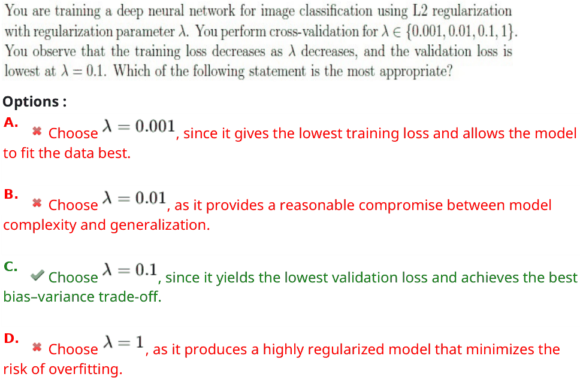
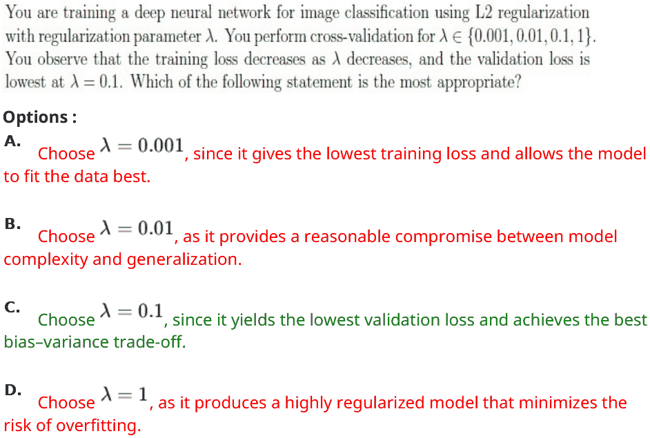
Answer: C
MCQQ24 marks
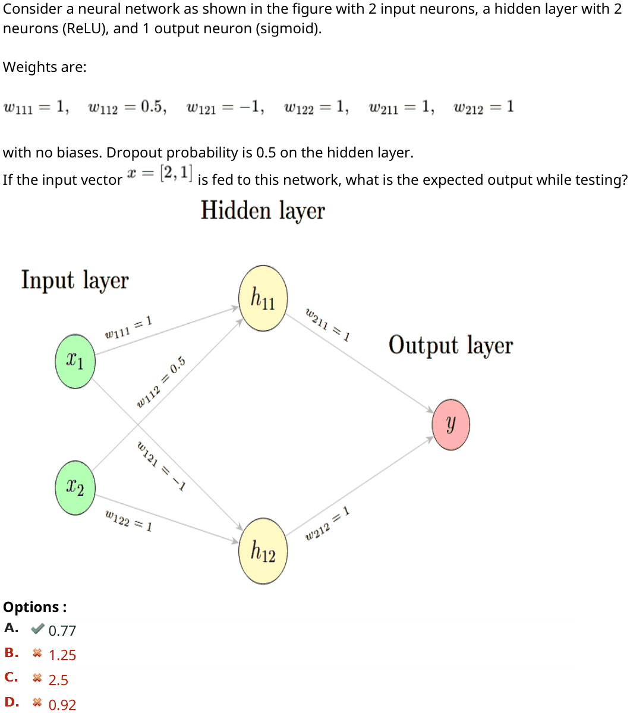
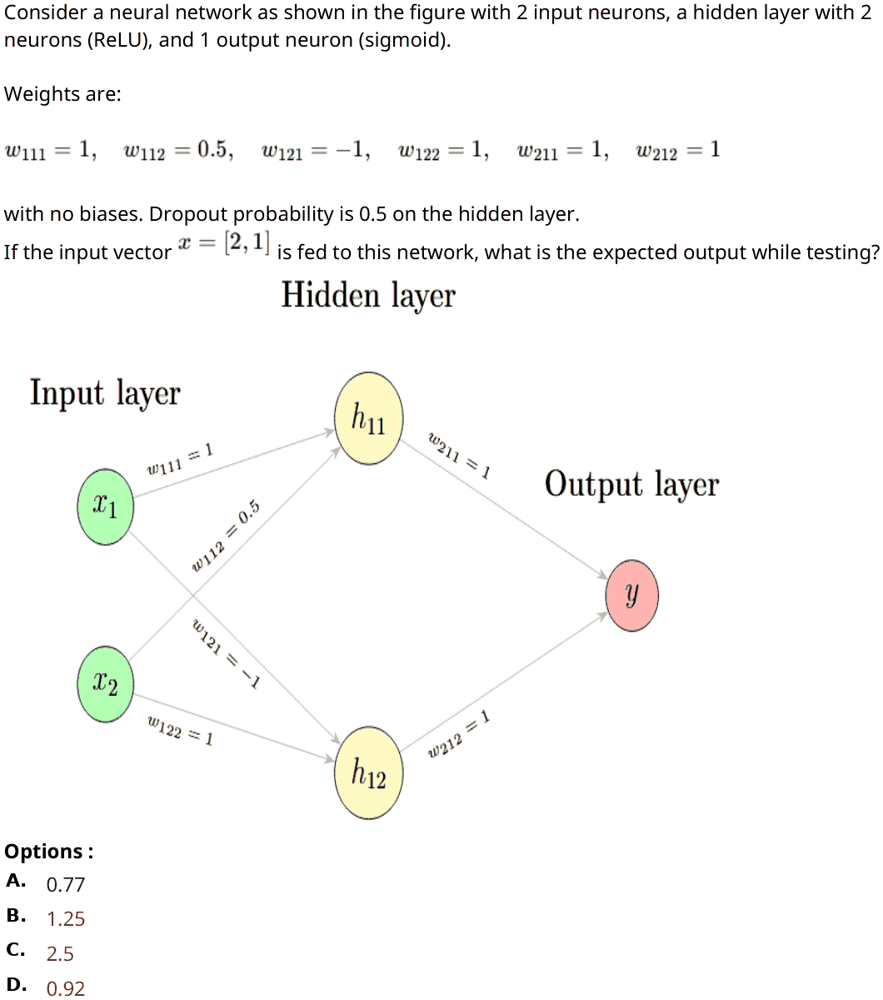
Answer: A
MSQQ33 marks
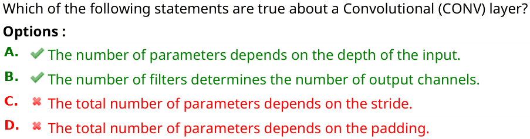
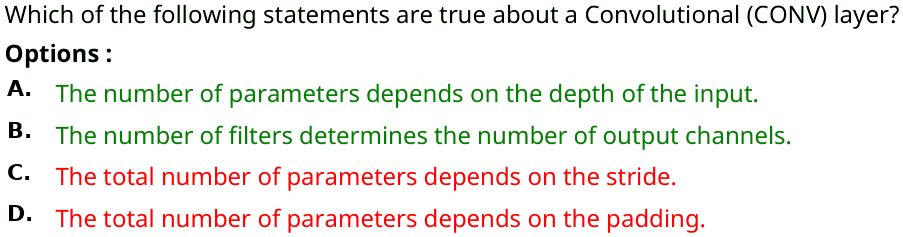
Answer: A, B
MSQQ43 marks
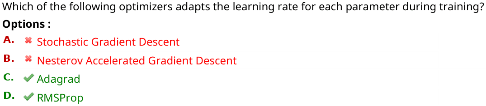
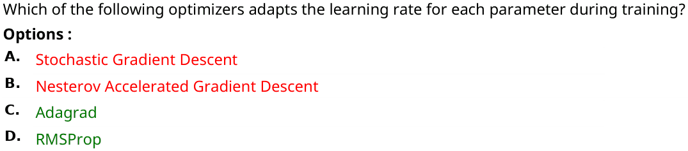
Answer: C, D
MSQQ53 marks
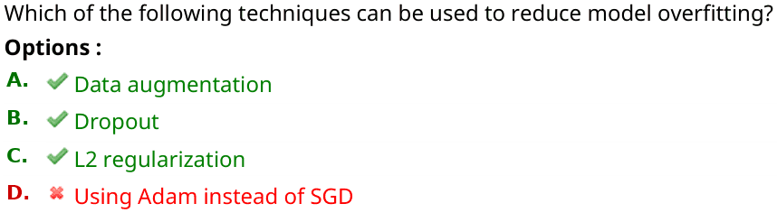
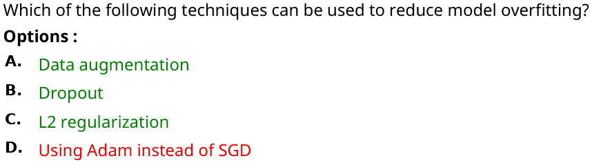
Answer: A, B, C
MCQQ63 marks
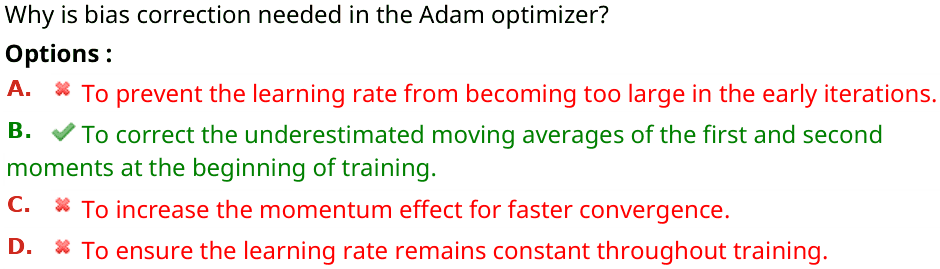
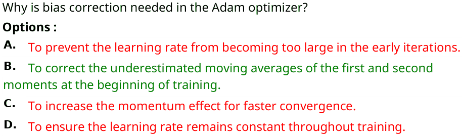
Answer: B
MSQQ73 marks
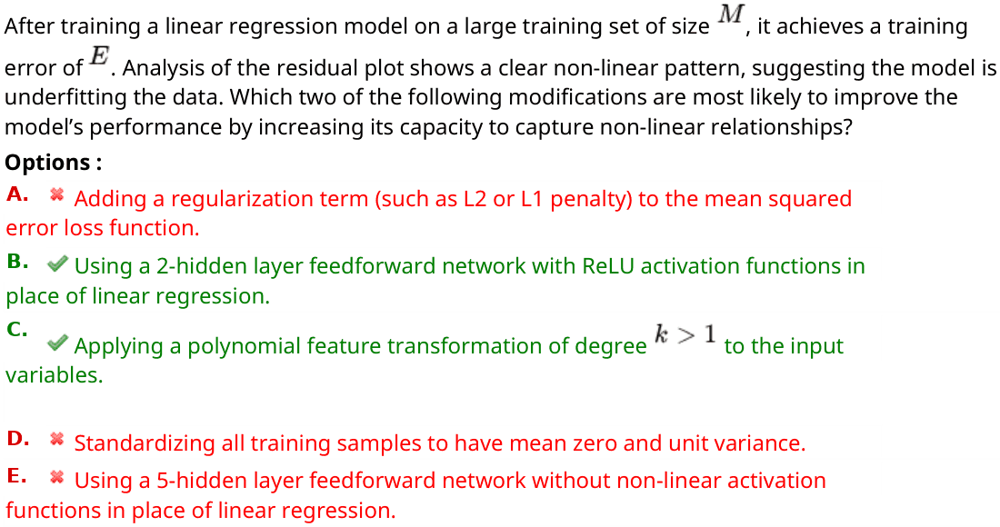
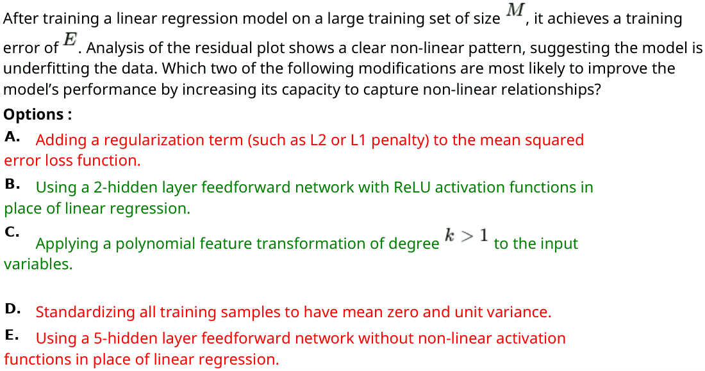
Answer: B, C
SAQ84 marks
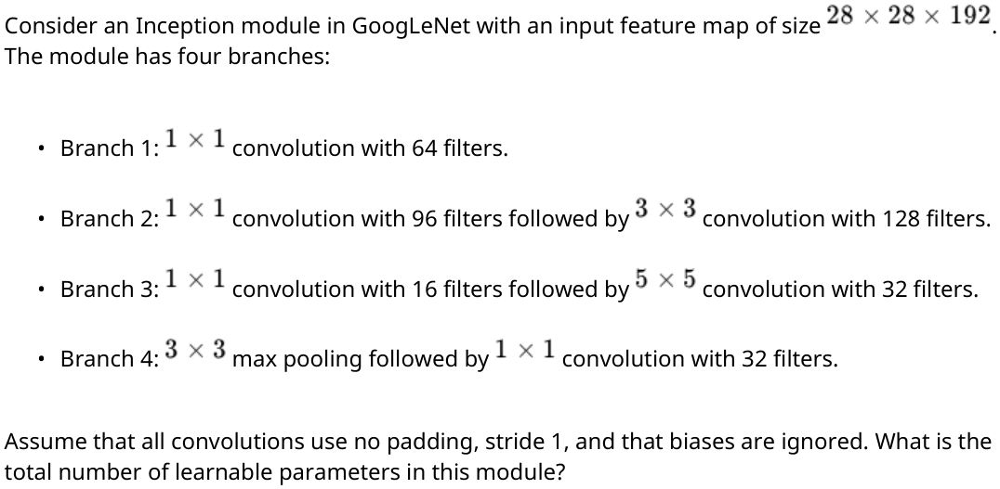
Answer: 163328
Comprehension · Q9–Q11
DATAShared data for Q9–Q11
MSQQ92 marks
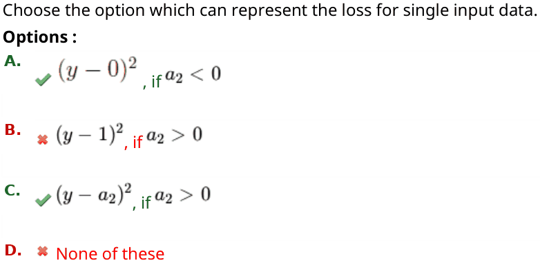
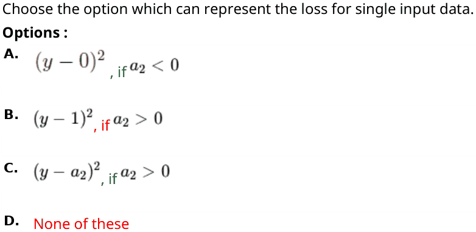
Answer: A, C
MCQQ102 marks
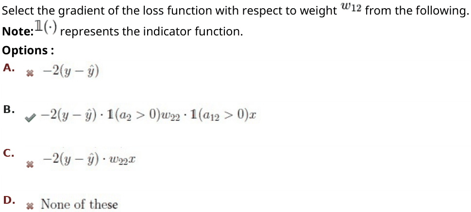
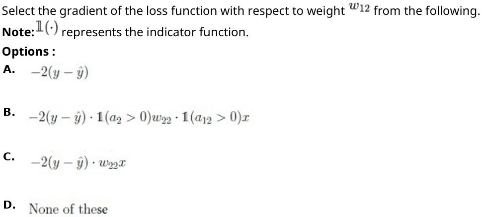
Answer: B
SAQ113 marks
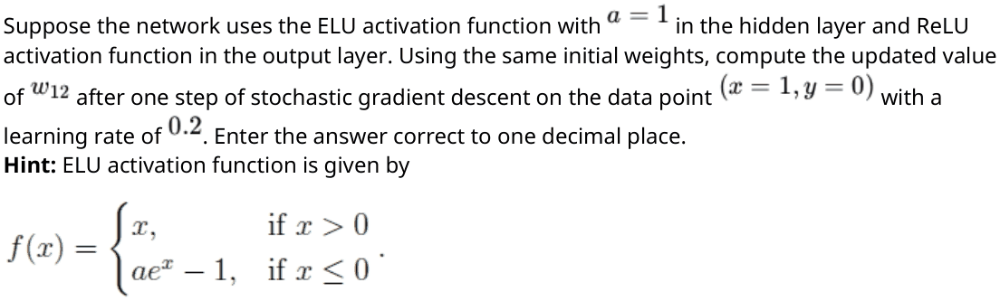
Answer: -0.4
Comprehension · Q12–Q14
DATAShared data for Q12–Q14
MCQQ122 marks
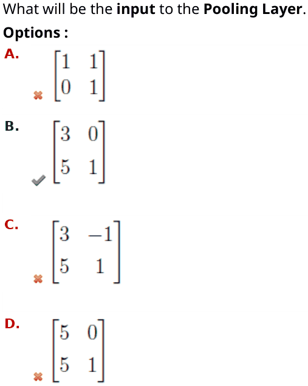
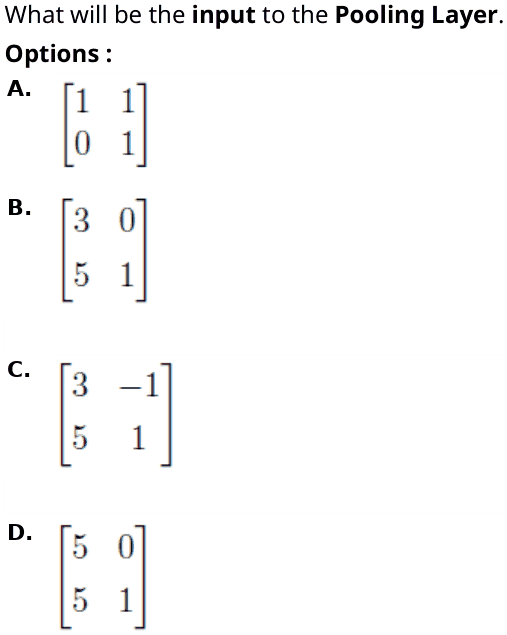
Answer: B
SAQ141 mark
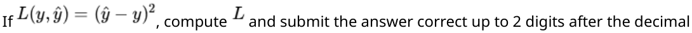
Answer: 3.8 to 4.2